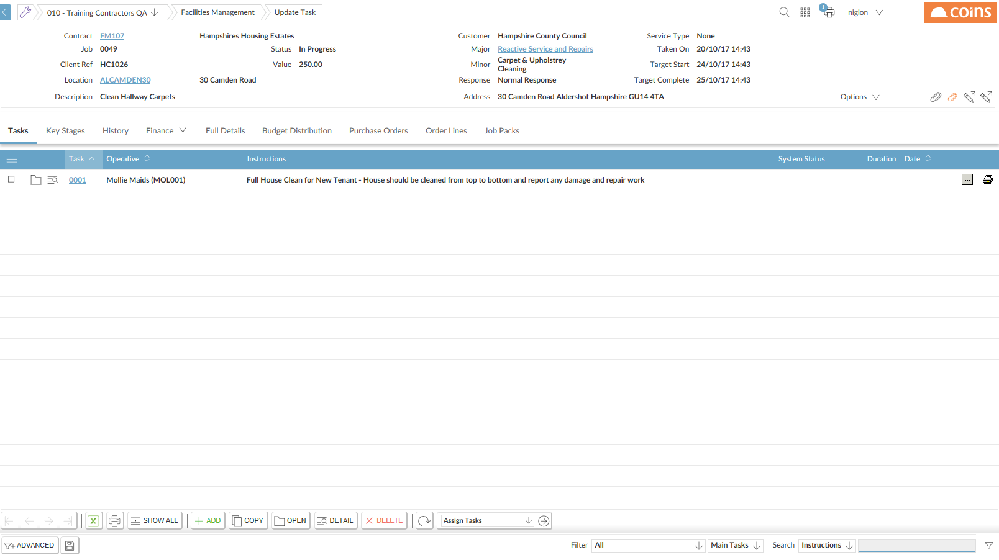
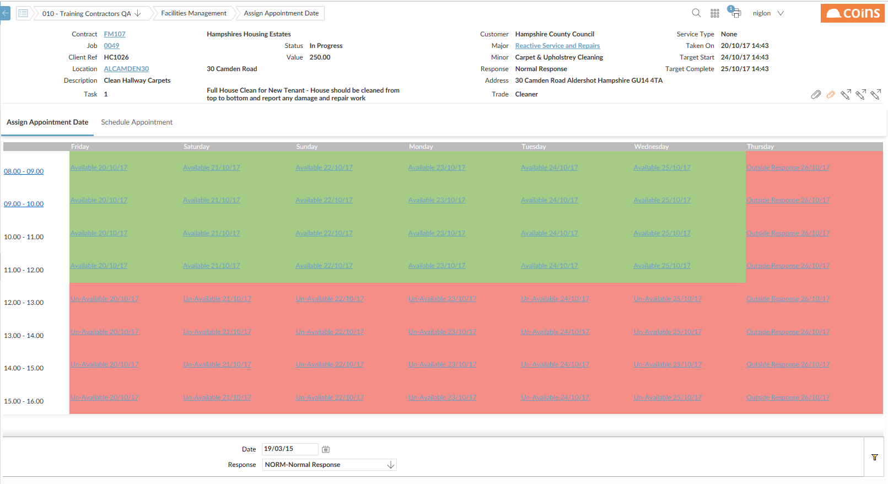
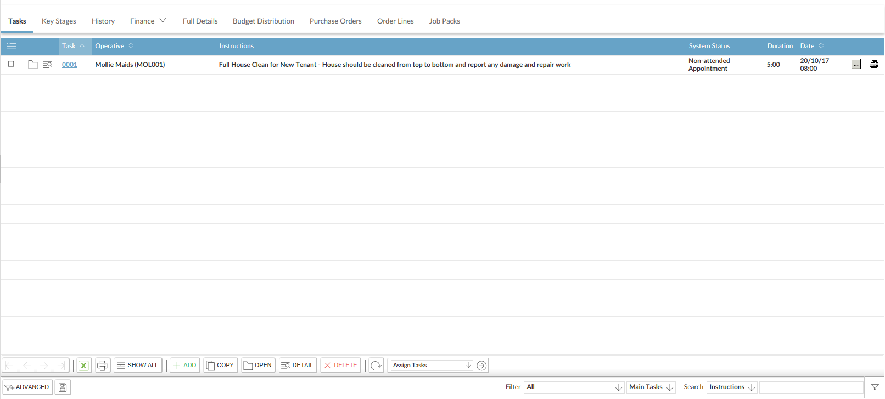

To book an appointment:
- Navigate to FM > Jobs
- Click the link in the Job Column for the job to allocate

- On the Tasks tab of the
 [Assign Appointment Date] to the right of the task you want to book.
[Assign Appointment Date] to the right of the task you want to book. - Click the Assign Appointment Date tab.

-
This shows you which appointment slots you have available.
- If the time-slot shows red, you cannot book an appointment for that time-slot. This may be because there is no available resource, or because the requirements of the
- If the time-slot shows green, you can book an appointment.
- To select a different range of dates, change the Date selector and click
 .
. - To change the response type of the .
- Click the link on an available time-slot to book the appointment for that time.
The appointment is now booked.

Once you have made an appointment, you cannot change the date, but you can cancel and re-book it.